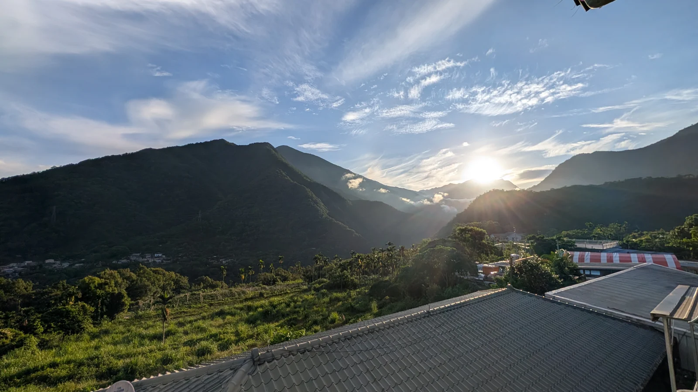

第一天 · 2026.07.27
回到雙龍，和家人聚一聚
這趟原本是安排帶家人去九族玩，後來媽媽知道雙龍也有我們的家人，才有了第一天的相聚。一路找到馬遠，再找到雙龍，這次終於能和家人坐在一起，聽長輩講媽媽家族以前的事。對我來說，這一天真的很重要。
讀第一天的故事FAMILY TRIP · 2026.07.27–07.29
七月底，帶著家人去南投玩三天。原本是安排去九族，後來知道雙龍也有媽媽的家人，就把第一天留給了這次相聚。第二天一起去九族玩，第三天再一起吃飯，才結束這趟熱熱鬧鬧的家族旅行 XD。
這次，換帶著家人一起出門 XD
第一天 · 2026.07.27
這趟原本是安排帶家人去九族玩，後來媽媽知道雙龍也有我們的家人，才有了第一天的相聚。一路找到馬遠，再找到雙龍，這次終於能和家人坐在一起，聽長輩講媽媽家族以前的事。對我來說，這一天真的很重要。
讀第一天的故事